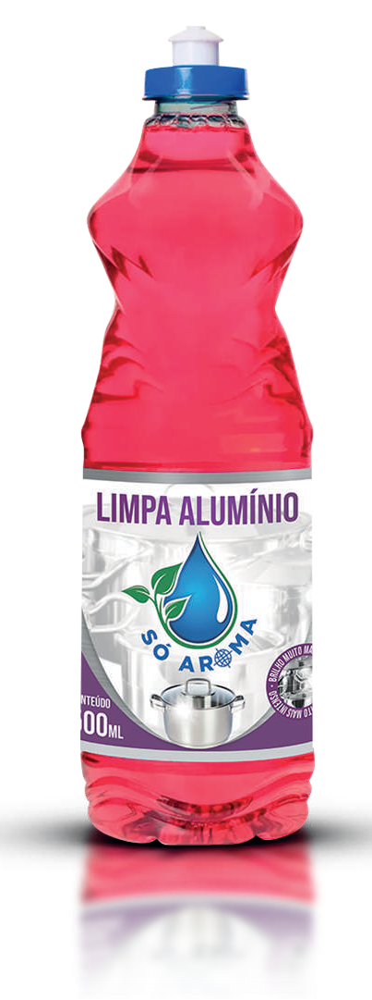

Limpa Alumínio
Para remover manchas e dar brilho ao alumínio, uma solução eficiente é o limpa alumínio, que deixa as superfícies como novas. Após a limpeza, o álcool perfumado complementa o processo, desinfetando e trazendo um toque de frescor ao ambiente.
Disponível em embalagens de: 500ml.
Downloads
